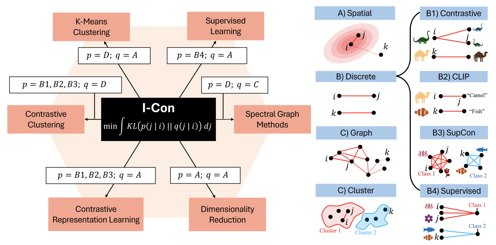

|
Shaden Alshammari I'm a graduate student in Computer Science and Engineering at MIT CSAIL, advised by William T. Freeman. I also collaborate with Yoon Kim and Marzyeh Ghassemi. My research focuses on self-supervised learning, contrastive feature learning, and vision-language models, aiming to push the boundaries of understanding and generating meaningful representations. I received my B.S. in Computer Science and Mathematics from MIT. During my undergrad, I worked with remarkable mentors including Deva Ramanan and Shu Kong at CMU's Argo AI Center for Autonomous Vehicle Research, and Abhinav Gupta and Victoria Dean at CMU’s Robotics Institute. Email / CV / Google Scholar / LinkedIn / GitHub |

|
Research
My research interests span computer vision, deep learning, and self-supervised learning, with a focus on understanding feature relationships through contrastive learning frameworks.
|  |
I-Con: A Unifying Framework for Representation Learning
Shaden Alshammari, M. Hamilton, A. Feldmann, J. Hershey, W.T. Freeman ICLR, 2025 This work proposes a unifying framework for representation learning, addressing the limitations of existing methods in compositional semantics. |

|
Vision-Language Models Do Not Understand Negation
Shaden Alshammari*, K. Alhamoud*, Y. Tian, G. Liu, P.H.S. Torr, Y. Kim, M. Ghassemi EVAL-FoMo @ ECCV, 2024 & submitted to CVPR 2025 This study highlights the limitations of vision-language models in understanding negation, posing challenges for compositional semantics. |

|
Long-tailed Recognition via Weight Balancing
Shaden Alshammari, Y. Wang, D. Ramanan, S. Kong CVPR, 2022 (160 citations up to date!) Proposes weight balancing techniques to address long-tailed distribution challenges in recognition tasks, significantly enhancing model performance. |

|
Using Contact Microphones for Robot Manipulation
Shaden Alshammari, V. Dean, T. Hellebrekers, P. Morgado, A. Gupta Women in Computer Vision Workshop @ NeurIPS, 2022 Explores the use of contact audio as an alternative tactile modality for complex robotic manipulation tasks. |

|
Continual Long-Tailed Recognition: Merge Tail Classes Today, Separate them Tomorrow
Y. Li, Shaden Alshammari, J. Jin, S. Kong Preprint, 2025 Investigates continual learning approaches for long-tailed recognition by dynamically managing tail classes. |
Teaching

|
Instructor-G, Linear Algebra and Optimization (18.C06) MIT Department of Mathematics - Sep 2023 - Present Teaching two weekly recitation sessions, developing course material, weekly handouts, and problem sets for over 180 students. Received a teaching quality rating of 6.9/7.0 and nominated for the Teaching Awards by students. |

|
Teaching Assistant, Introduction to Machine Learning (6.036) MIT EECS Department - Jan 2024 - May 2024 Supported professors in organizing technical materials on ML topics, conducted weekly recitations, lab sessions, and hosted office hours for student learning support. |

|
Trainer, Math Olympiad + Deputy Leaders and Observer @ IMO & EGMO 2019-2023 Trained students preparing for the International Math Olympiad (IMO), focusing on problem-solving skills and advanced mathematical concepts. |
Website design credits to Jon Barron.